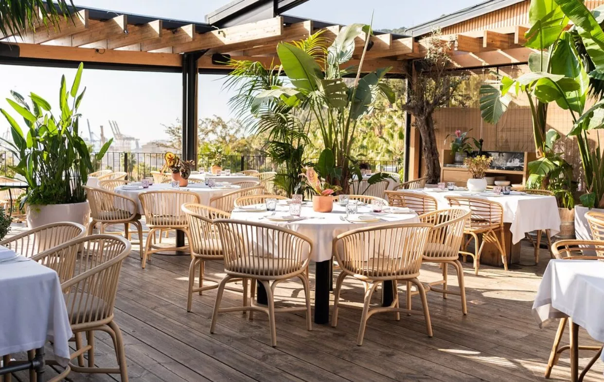
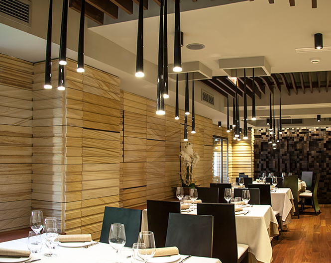
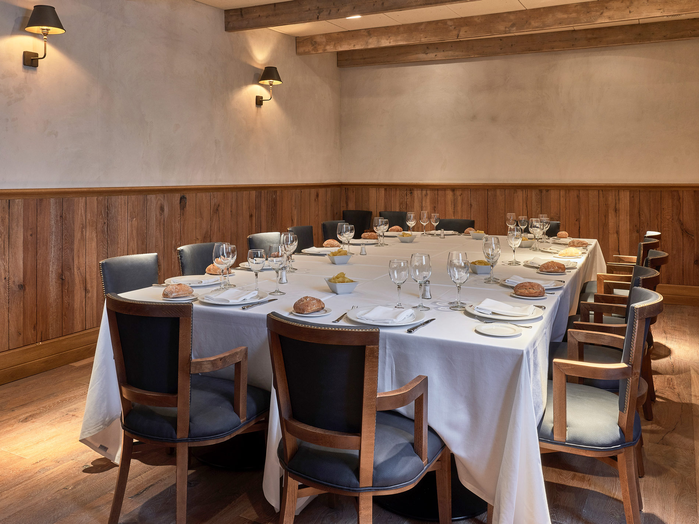
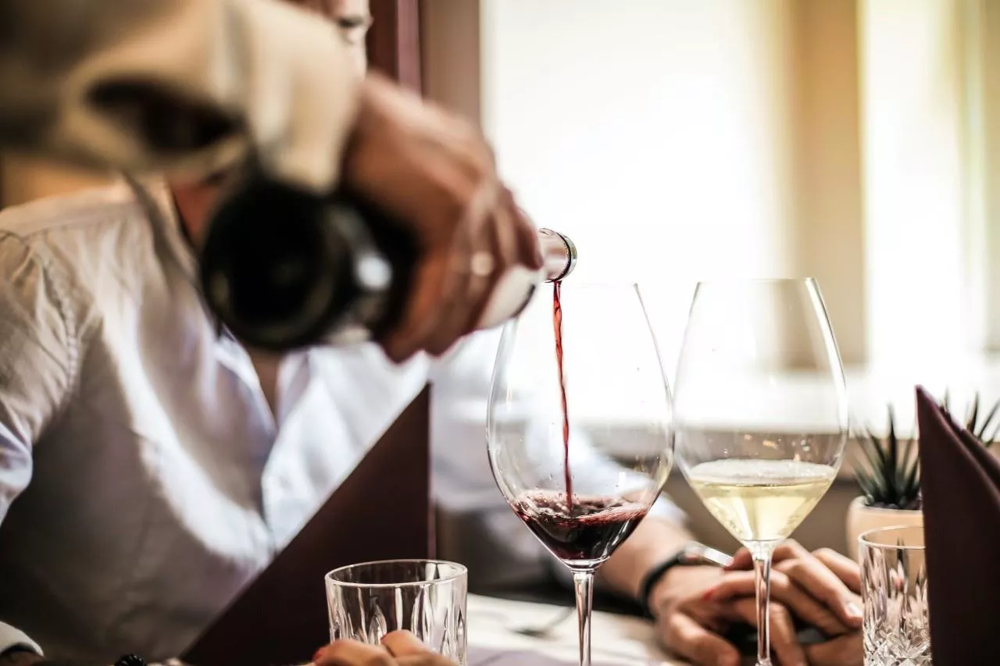
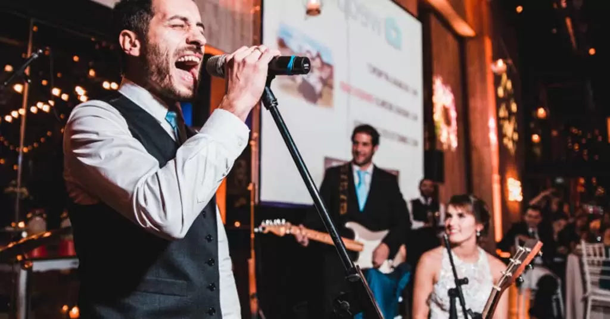
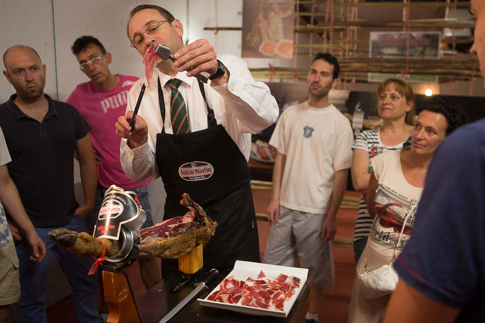
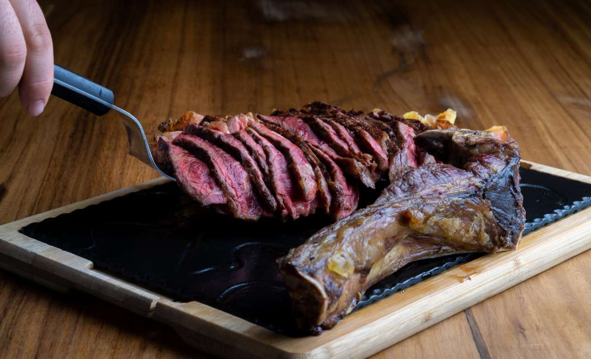
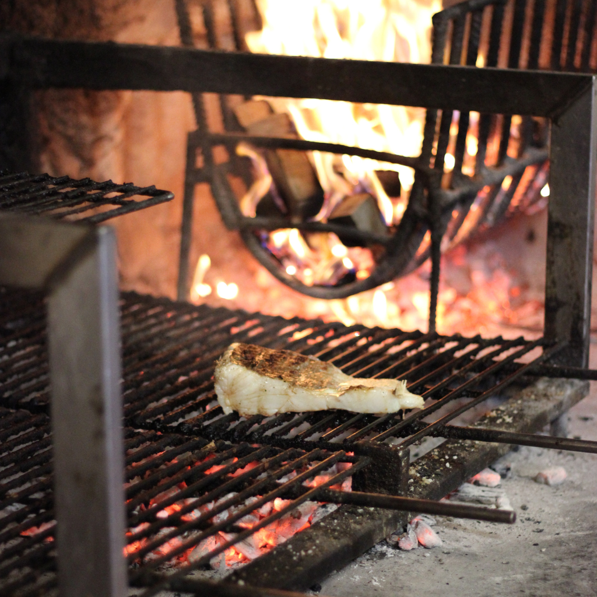
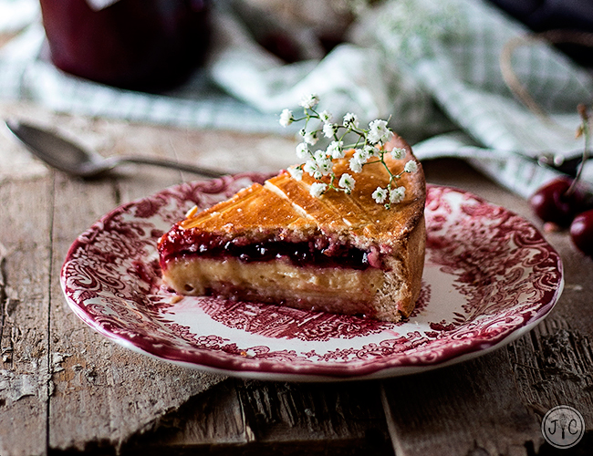
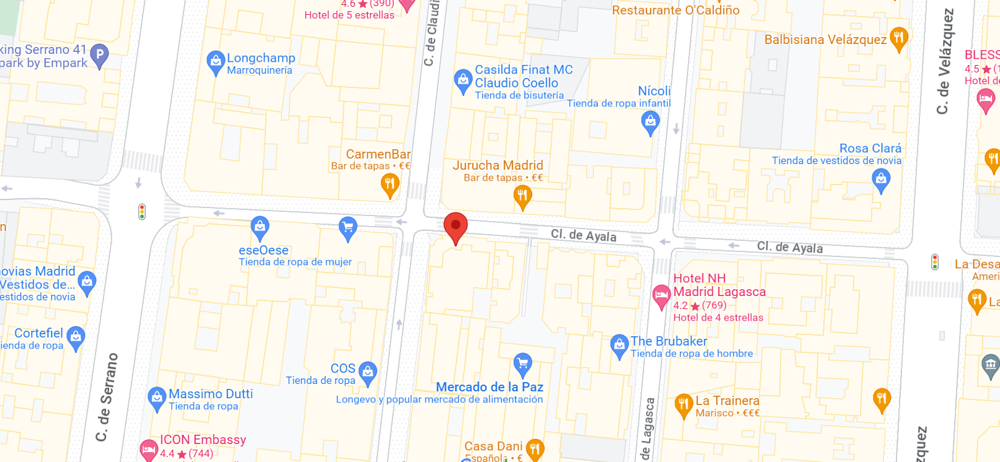

Descubre la experiencia culinaria excepcional en nuestro restaurante. Explora nuestro variado menú, reserva tu mesa, y disfruta de platos exquisitos en un ambiente acogedor. ¡Ven y prueba lo mejor de la gastronomía en CHAPOOO hoy mismo!
En CHAPOOO hemos cuidado cada detalle para ofrecerta una experiencia única. Te invitamos a explorar nuestro comedor diseñado para crear un ambiente acogdor y relajante. También contamos con una terraza al aire libre ideal para disfrutar de comidas al sol o cenas bajo las estrellas.
  Cada evento que organizamos está diseñado con esmero y atención al detalle para que nuestros comensales disfruten de una experiencia única. Desde cenas temáticas y maridajes de vino hasta noches de música en vivo y celebraciones especiales, nuestros eventos se adaptan a todos los gustos.
  Nuestras especialidades en son el corazón de nuestra propuesta gastronómica, cuidadosamente diseñadas para sorprender tus sentidos. Cada plato que se encuentra en nuestra selección que ofrecemos es una expresión culinaria de la pasión y el compromiso de nuestro talentoso grupo de cocineros.
  Nuestra puerta está abierta para recibirte en los siguientes horarios:
Comida (Lunes a Viernes): 12:00 p.m. - 3:00
Cena (Lunes a Domingo): 6:00 p.m. - 10:00 p.m.
Brunch (Domingos): 10:00 a.m. - 2:00 p.m.
¡Esperamos verte pronto!
Nuestro restaurante está estratégicamente ubicado para que puedas disfrutar de una experiencia culinaria excepcional sin importar de dónde vengas. Ya sea que estés explorando la ciudad como turista, buscando un lugar cercano para comer después del trabajo o planificando una noche especial.
